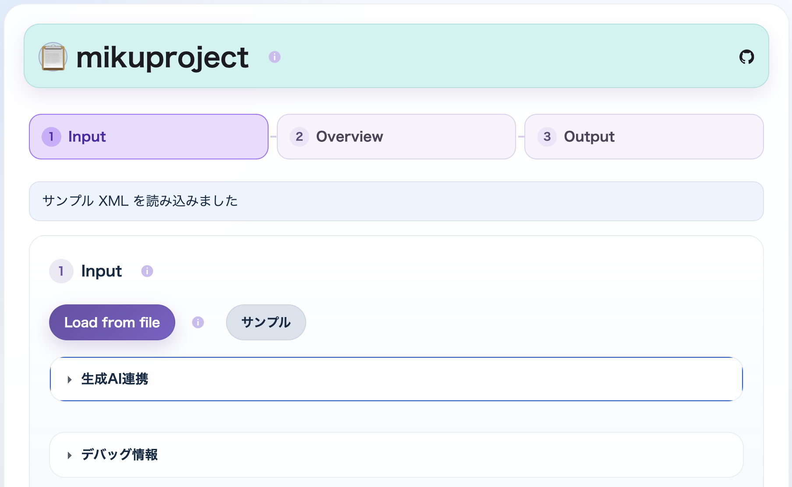
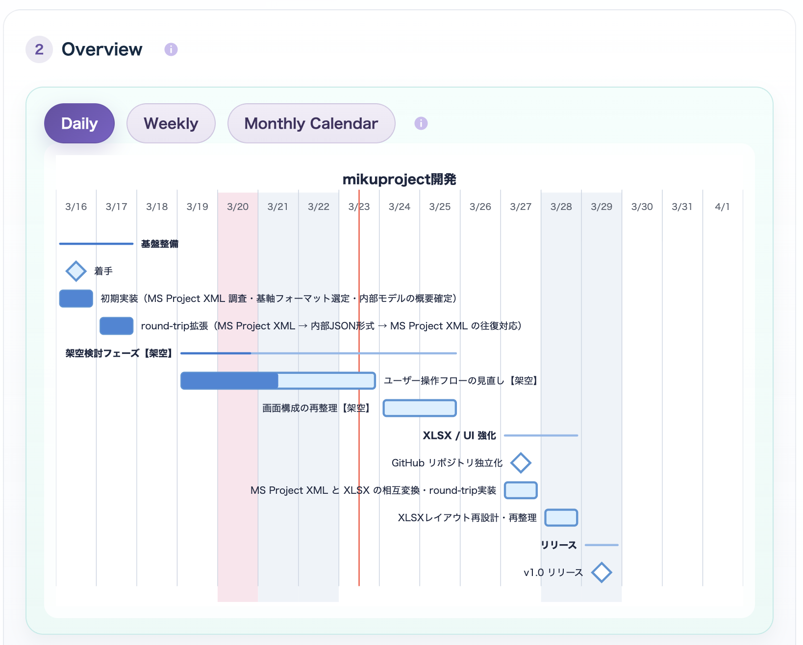
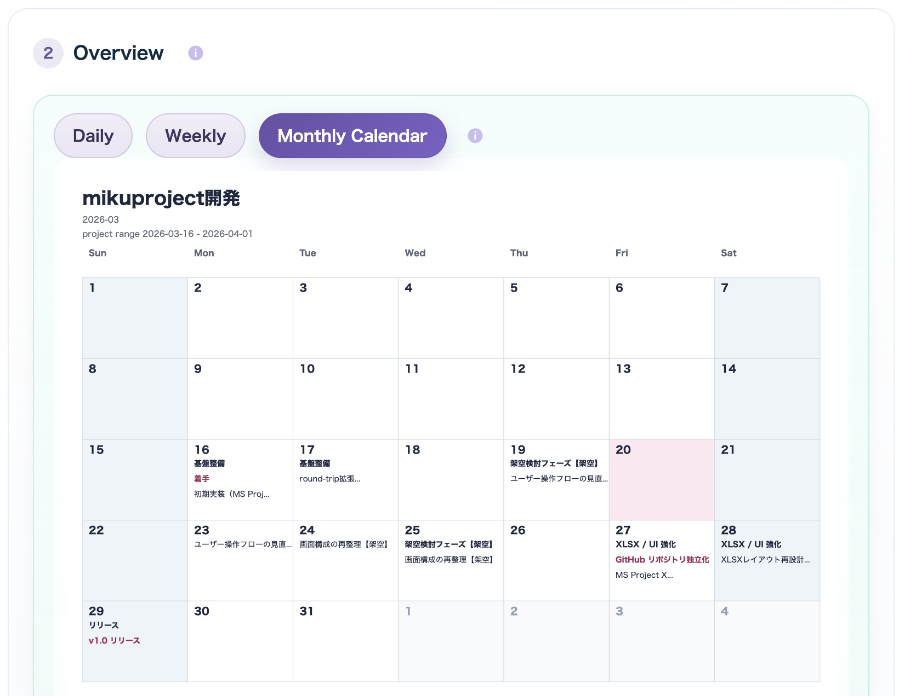
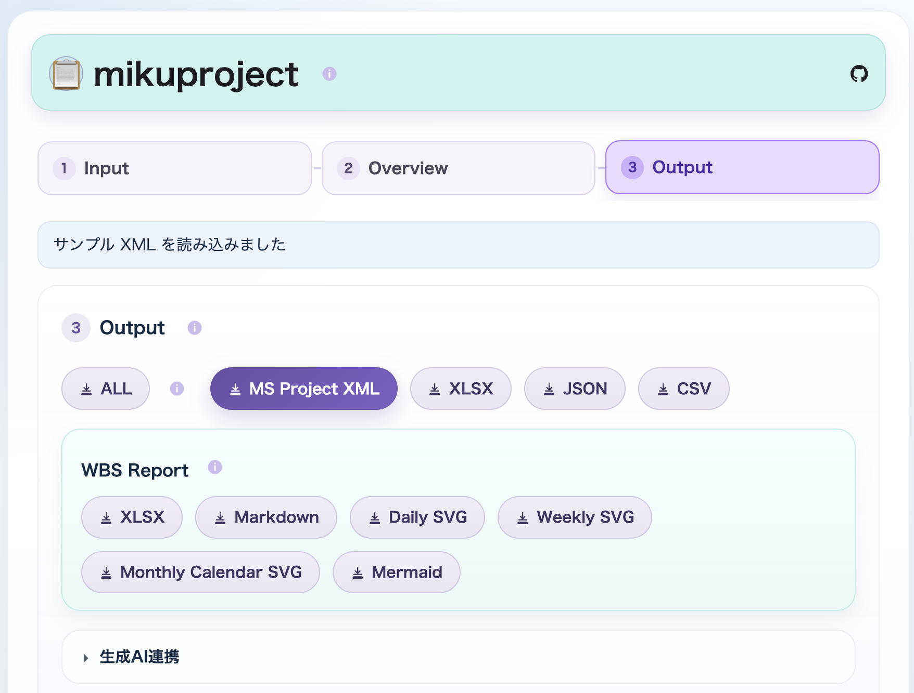
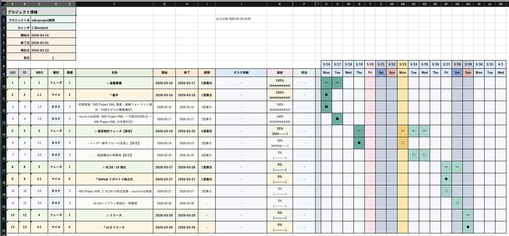
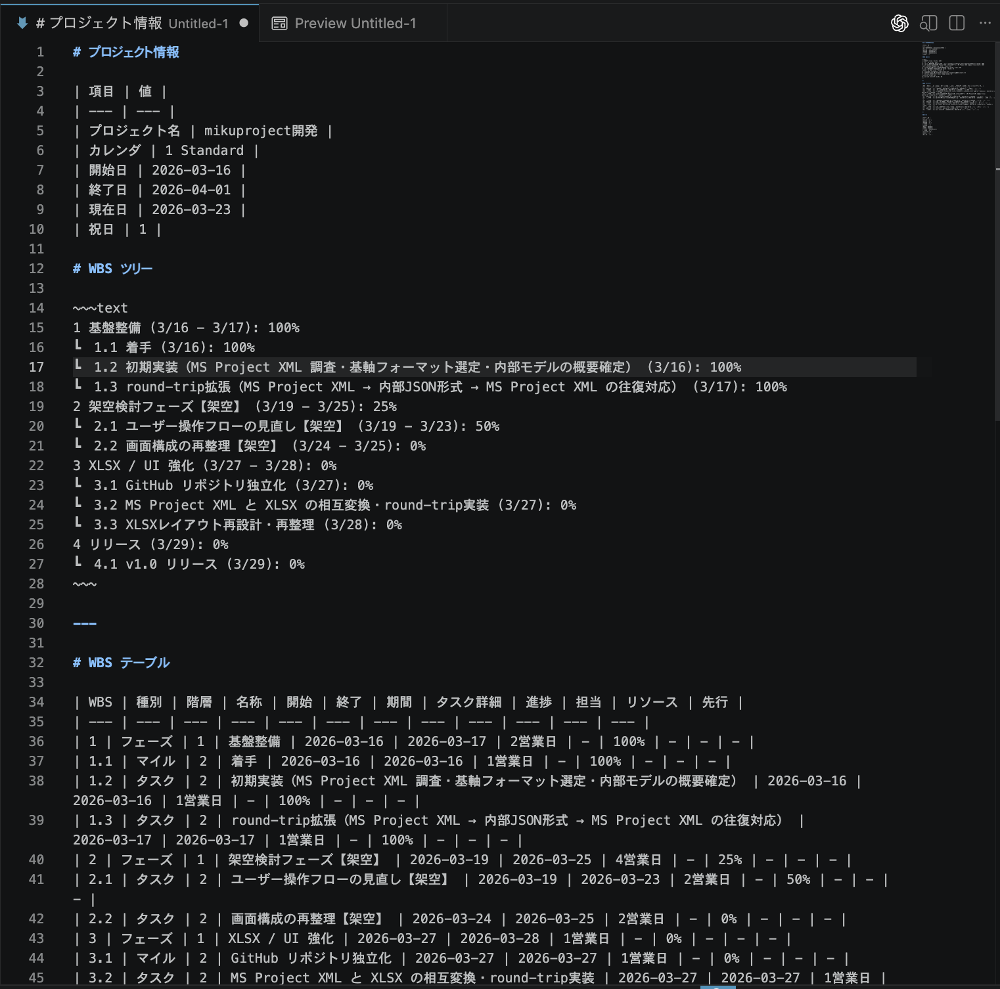

Local Browser Tool
mikuproject
What is this?
mikuproject は、MS Project XML を基軸に、変換・可視化・限定編集を行う single-file web app です。
MS Project XMLを基軸にした変換・可視化・限定編集を重視しています。- 生成AI 連携を意識した projection の出力と草案の再取込を持ちます。
- 人が読むための
WBS Excel ブック (.xlsx)帳票出力を持ちます。 - Web ブラウザさえあればインストール不要・ネットワーク不要で利用できます。
Features
MS Project XMLを読み込み、内部モデルへ変換します。- 内部モデルを JSON とサマリとして確認できます。
MS Project XMLを再生成できます。- Mermaid gantt テキストと、native SVG の preview / SVG を出力できます。
Project / Tasks / Resources / Assignments / Calendarsworkbook をXLSX Export / Importできます。- 人が読むための
WBS Excel ブック (.xlsx)を出力できます。 CSV + ParentIDの生成と解析を行えます。- 生成AI向け JSON projection の出力と草案 JSON の取込ができます。
Use Cases
- 管理用の Excel ブックに必要な情報を入力し、
WBS Excel ブック (.xlsx)形式へ変換したい。 - 生成AI に専用プロンプトを与えて WBS 草案を作成し、その結果を取り込んで
WBS Excel ブック (.xlsx)にしたい。 MS ProjectのデータをMS Project XML形式でエクスポートし、それをWBS Excel ブック (.xlsx)形式へ変換したい。
How to use
- Web ブラウザで
mikuproject.htmlを開きます。 Load from fileから project ファイルを読み込むか、サンプルを使います。- 内部モデル、validation、native SVG preview を確認します。
- 必要に応じて
MS Project XML、XLSX、WBS Excel ブック (.xlsx)、Mermaid、CSV を保存します。
Screenshots

Load from file、サンプル、生成AI連携 から入力を受け付けます。

Daily / Weekly / Monthly Calendar preview を確認します。

Monthly Calendar preview で月間カレンダー表示を確認できます。

MS Project XML、XLSX、JSON、CSV、WBS XLSX、Mermaid、SVG を保存できます。

WBS Excel ブック (.xlsx) 帳票出力の例です。

WBS Markdown 出力の例です。WBS ツリー と WBS テーブル を含みます。